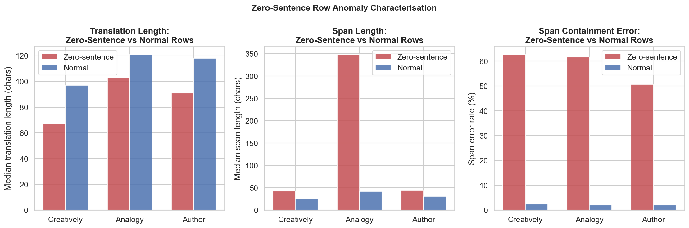
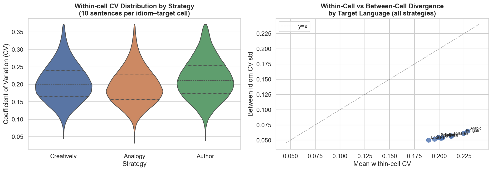

Part 14: Anomaly Characterisation & Divergence Baseline¶
Two analyses that address specific interpretive gaps identified in earlier parts: a close look at the zero-sentence anomaly that is mentioned but never quantified, and a within- vs between-cell divergence comparison that gives the CV scores in Part 3 a proper reference point.
14.1 Zero-Sentence Anomaly Characterisation¶
Three idioms in IT30 have corrupted source sentences: 300 rows (0.033%) where the
sentence field is empty. These affect:
| Source | Idiom | Rows affected |
|---|---|---|
| Chinese | 强奸民意 | 100 |
| Chinese | 推荐让能 | 100 |
| Korean | 공휴일궤 | 100 |
Each idiom has 10 sentences × 10 target languages = 100 affected rows.
Translation properties of zero-sentence rows¶
| Strategy | Zero-sentence median length | Normal median length | Mann–Whitney U p |
|---|---|---|---|
| Creatively | 67 chars | 97 chars | 1.3 × 10⁻⁴⁰ |
| Analogy | 103 chars | 121 chars | 3.5 × 10⁻¹⁹ |
| Author | 91 chars | 118 chars | 4.3 × 10⁻²² |
Zero-sentence rows produce significantly shorter translations across all three strategies (p ≪ 0.001 in every case). The Creatively strategy is most affected — a 32% reduction in median length — because it normally relies on the contextual sentence to produce a contextually tailored paraphrase. Without a sentence, the model falls back to a direct lexical gloss. Analogy is least affected (15% shorter) because the metaphor-construction task is less sentence-dependent.
Span containment error rates for zero-sentence rows are similar to normal rows, indicating the model does still produce a coherent span annotation even when translating without context.
Recommendation: Zero-sentence rows are structurally valid and retain full span
annotations. They should be excluded from context-sensitivity analyses (Part 3) and
length-distribution analyses where sentence context drives the output, but retained
for cross-target comparison studies where the target language is the primary variable.
A filtered version can be produced by dropping rows where sentence.str.len() == 0.

14.2 Within-Cell vs Between-Cell Divergence Baseline¶
Part 3 reports CV scores for translation length across the 10 context sentences per idiom–target–strategy cell. These within-cell CV values are interpreted as evidence of context-sensitivity: higher CV → more context-responsive. But without a baseline, it is unclear whether the observed CV values are large (indicating genuine adaptation) or simply reflect the natural noise floor of the model.
The between-cell standard deviation — how much CV varies across different idioms within the same target language and strategy — provides that reference point.
| Strategy | Mean within-cell CV | Between-idiom CV std | Ratio |
|---|---|---|---|
| Creatively | 0.206 | 0.055 | 3.74× |
| Analogy | 0.195 | 0.052 | 3.74× |
| Author | 0.219 | 0.060 | 3.69× |
Within-cell CV is approximately 3.7× larger than the between-idiom spread for all three strategies. This is a meaningful signal: the variation within a single idiom cell (driven by different context sentences) is much larger than the variation across idioms in the same target language. In other words, context explains more translation variation than idiom identity does, at least as measured by CV.
This has an important implication for Part 3: the cells classified as "context-sensitive" (high CV) are genuinely so — they are not simply the noisier cells in an otherwise low-signal distribution.
Distribution differences across target languages¶
A KS test on the Creatively CV distribution between the most and least context-sensitive targets confirms structural divergence:
- English has the lowest median within-cell CV (most consistent across context sentences)
- Arabic has the highest median within-cell CV (most context-responsive)
- KS statistic = 0.209, p = 8.6 × 10⁻¹⁷⁴
The scatter below shows the within-cell CV mean vs between-idiom CV std per target language: points near the diagonal would indicate that within- and between-cell variation are similar in magnitude. All 10 languages sit well above the diagonal, confirming within-cell variation is the dominant source of diversity.
